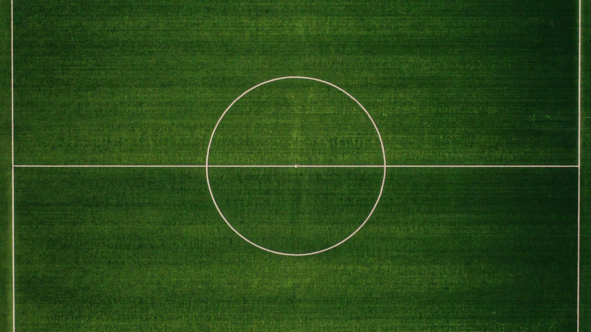

Игры
Светофор
1) Игроки выбирают воду, который становится в центре поля.

2)Все остальные становятся на один из краёв.
3)Вода отворачивается от игроков и загадывает любой цвет.
4)После чего поварачивается к игрокам, а игроки смотрят есть ли у них этот цвет.
5)Те у кого он есть, проходят спокойно на другой конец поля.
6)А те у кого нет этого цвета, должны пробежат на другой край.
7)А вода в свою очередь должен поймать одного из игроков.
8)Тот кого он поймал встаёт в центр и становится водой.
9)И всё сначала(кроме1 и 2).